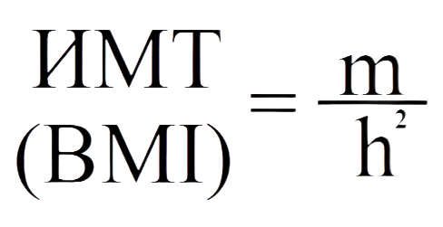

Калькулятор массы тела
С помощью данного онлайн-калькулятора вы можете рассчитать ваш индекс массы тела, ИМТ (от англ. Body mass index - BMI).
С помощью индекса массы тела вы можете проверить соответствие между массой вашего тела и вашим ростом и узнать, имеется ли у вас избыточный вес, или же, наоборот, не страдаете ли вы недостатком веса. Чтобы рассчитать индекс массы вашего тела (ИМТ) заполните в калькуляторе поля, соответствующие значениям вашего роста и веса.
Вводите значения роста и вашего веса с точностью до десятых, тогда результат вычисления будет наиболее точным.
Индекс массы тела ИМТ (англ. BMI) был предложен бельгийским ученым А.Кетле и может быть вычислен последующей формуле:

Следует отметить, что индекс массы тела рекомендуется рассчитывать для мужчин и женщин в возрасте 20-65 лет.
При использовании ИМТ для оценки телосложения профессиональных спортсменов или подростков (до 18 лет),
полученные результаты могут быть неверными.